METER / GAUGE SYSTEM > SYSTEM DESCRIPTION |
| METER GAUGE AND WARNING/INDICATOR (w/o Multi-information Display) |
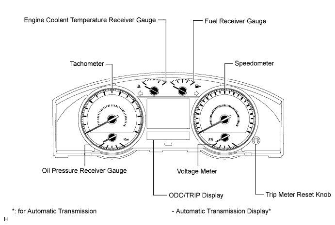
| Item | Details |
| Speedometer | Based on a signal received from the wheel speed sensor, the skid control ECU calculates the vehicle speed and transmits data to the combination meter (CAN). |
| Tachometer | The combination meter receives a speed signal from the ECM, and the gauge needle operates (CAN). |
| ODO/TRIP meter |
|
| Fuel receiver gauge | The combination meter receives fuel amount information measured by the fuel sender gauge, and the gauge needle operates (Direct line). |
| Engine coolant temperature gauge | The combination meter receives an engine coolant temperature signal from the ECM, and the gauge needle operates (CAN). |
| Oil pressure receiver gauge | The combination meter receives an engine speed signal from the ECM (CAN), and receives an oil pressure sender signal from the oil pressure sender (Direct line). Then the meter measures signals and the gauge needle operates. |
| Voltage meter | Monitors IG voltage and the gauge needle operates (Direct line). |
| Item | Details |
| BEAM indicator light 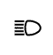 | Receives signals from the main body ECU (CAN). |
| FRONT FOG indicator light 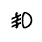 | The indicator turns on when a FRONT FOG illumination command signal is received (CAN). |
| REAR FOG indicator light*1, *2, *5 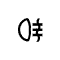 | The indicator turns on when a REAR FOG illumination command signal is received (CAN). |
| A/T OIL TEMP warning light 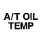 | Warning is displayed when the oil temperature is high (CAN). |
| A/T P warning light 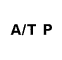 | The indicator turns on when a shift position P signal or transfer neutral switch signal are received (CAN). |
| SRS warning light | Receives malfunction signals from the center airbag sensor (CAN). |
| SMART KEY indicator light 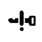 | The indicator turns on when a key not in cabin warning signal is received (CAN). |
| DOOR warning light 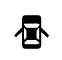 | The open door indicator comes on when a signal is received from the main body ECU (CAN). |
| TIRE CARRIER warning light*10 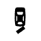 | The indicator turns on based on the TIRE CARRIER illumination command signal (Direct line). |
| Driver side seat belt warning light 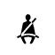 | Receives driver seat belt signals (Unfastened) from the main body ECU (CAN). |
| Brake warning light 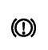 |
|
| CHARGE warning light | Receives malfunction signals from the generator (Direct line). |
| 4LO indicator light 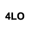 | Receives 4LO indicator signals from the Four WHEEL DRIVE control ECU (CAN). |
| ABS warning light 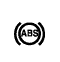 | Receives malfunction signals from the skid control ECU (CAN). |
| MIL 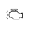 | Receives malfunction signals from the ECM (Direct line). |
| T-BELT indicator light*3, *4, *6 | Depending on the distance the timing belt warning is displayed on the meter. Only applies to diesel vehicles (Direct line). |
| GLOW indicator light*7 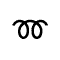 | The indicator turns on when a GLOW indicator signal is received (CAN). |
| OIL LEVEL indicator light 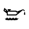 | The indicator turns on when an oil level signal is received (Direct line). |
| FUEL warning light 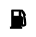 | Receives fuel empty signals from the fuel sender gauge (Direct line). |
| FUEL FILTER & SEDIMENTER indicator light*7 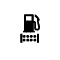 | The indicator turns on when a fuel filter clogged malfunction signal is received, or blinks when a fuel sedimenter malfunction signal is received (Direct line). |
| SLIP indicator light*8 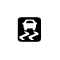 | Receives malfunction signals from the skid control ECU (CAN). |
| VSC OFF indicator light*8 | The VSC OFF indicator turns on when a VSC warning signal is received (CAN). |
| CRUISE main indicator light | Receives a CRUISE on signal or malfunction signal from the ECM (CAN). |
| Turn signal indicator light (LH/RH) 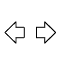 | Receives a turn signal from the FLASHER relay (Direct line). |
| WASHER indicator light | The indicator turns on when a washer fluid level signal is received (Direct line). |
| RSCA OFF indicator light*9 | Receives an RSCA OFF signal from the center airbag sensor (Direct line). |
| CRAWL indicator light*1, *6 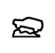 | Receives a CRAWL switch ON signal from the skid control ECU (CAN). |
| Downhill assist control indicator light*1, *2, *7 | The indicator turns on when a downhill assist control indicator signal is received (CAN). |
| ECT PWR indicator light | Receives an ECT PWR switch ON signal from the ECM (CAN). |
| 2nd START indicator light 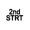 | Receives a 2nd START switch ON signal from the ECM (CAN). |
| CENTER differential lock indicator light 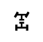 | Receives a center differential lock switch ON signal from the Four WHEEL DRIVE control ECU (CAN). |
| REAR differential lock warning light 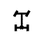 | The indicator turns on when a REAR differential lock indicator signal is received (CAN). |
| SPEED LIMIT indicator light*4 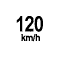 | The indicator turns on when a vehicle speed signal is received (CAN). |
| A/T P shift position indicator*11 | Receives a P signal from the ECM (CAN). |
| A/T R shift position indicator*11 | Receives an R signal from the ECM (CAN). |
| A/T N shift position indicator*11 | Receives an N signal from the ECM (CAN). |
| A/T D shift position indicator*11 | Receives a D signal from the ECM (CAN). |
| A/T S (1 to 5) shift position indicator*12 | Receives a (1 to 5) signal from the ECM (CAN). |
| A/T S (1 to 6) shift position indicator*13 | Receives a (1 to 6) signal from the ECM (CAN). |
| METER GAUGE AND WARNING/INDICATOR (w/ Multi-information Display) |
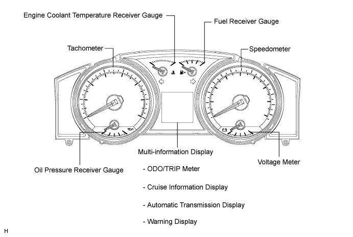
| Item | Details |
| Speedometer | Based on a signal received from the wheel speed sensor, the skid control ECU calculates the vehicle speed and transmits data to the combination meter (CAN). |
| Tachometer | The combination meter receives a speed signal from the ECM, and the gauge needle operates (CAN). |
| ODO/TRIP meter |
|
| Fuel receiver gauge | The combination meter receives fuel amount information measured by the fuel sender gauge, and the gauge needle operates (Direct line). |
| Engine coolant temperature gauge | The combination meter receives an engine coolant temperature signal from the ECM, and the gauge needle operates (CAN). |
| Oil pressure receiver gauge | The combination meter receives an engine speed signal from the ECM (CAN), and receives an oil pressure sender signal from the oil pressure sender (Direct line). Then the meter measures signals and the gauge needle operates. |
| Voltage meter | Monitors IG voltage and the gauge needle operates (Direct line). |
| Item | Details |
| BEAM indicator light | Receives signals from the main body ECU (CAN). |
| FRONT FOG indicator light | The indicator turns on when a FRONT FOG light illumination signal is received (CAN). |
| TAIL LIGHT indicator light 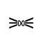 | The indicator turns on when a taillight illumination signal is received (CAN). |
| REAR FOG indicator light*9 | The indicator turns on when a REAR FOG light illumination signal is received (CAN). |
| A/T P warning light | The indicator turns on when a shift position P signal or transfer neutral switch signal are received (CAN). |
| SRS warning light | Receives malfunction signals from the center airbag sensor (CAN). |
| DOOR warning light | The open door indicator comes on when a signal is received from the main body ECU (CAN). |
| TIRE CARRIER warning light*11 | The indicator turns on based on the TIRE CARRIER illumination command signal (Direct line). |
| Driver side seat belt warning light | Receives driver seat belt signals (Unfastened) from the main body ECU (CAN). |
| Brake warning light |
|
| CHARGE warning light | Receives malfunction signals from the generator (Direct line). |
| 4LO indicator light | Receives 4LO indicator light signal from the Four WHEEL DRIVE control ECU (CAN). |
| ABS warning light*2 | Receives malfunction signals from the skid control ECU (CAN). |
| MIL | Receives malfunction signals from the ECM (Direct line). |
| GLOW indicator light*8 | The indicator turns on when a GLOW indicator signal is received (CAN). |
| FUEL warning light | Receives fuel empty signals from the fuel sender gauge (Direct line). |
| SLIP indicator light | Receives malfunction signals from the skid control ECU (CAN). |
| CRUISE main indicator light | Receives a CRUISE on signal or malfunction signal from the ECM (CAN). |
| Turn signal indicator light (LH/RH) | Receives a turn signal from the FLASHER relay (Direct line). |
| RSCA OFF indicator light*10 | Receives an RSCA OFF signal from the center airbag sensor (Direct line). |
| Master warning light 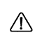 | Receives a warning signal from each sensor and ECU (Direct line and CAN). |
| CRAWL indicator light*7 | Receives a CRAWL switch ON signal from the skid control ECU (CAN). |
| Downhill assist control indicator light*1, *2, *5, *6, *8 | The indicator turns on when a downhill assist control indicator signal is received (CAN). |
| ECT PWR indicator light | Receives an ECT PWR switch ON signal from the ECM (CAN). |
| 2nd START indicator light | Receives a 2nd START switch ON signal from the ECM (CAN). |
| Center Differential Lock indicator light | Receives a center differential lock switch ON signal from the Four WHEEL DRIVE ECU (CAN). |
| Rear Differential Lock warning light*1, *2, *3, *8 | The indicator turns on when a REAR differential lock indicator signal is received (CAN). |
| SPEED LIMIT indicator light*4 | The indicator turns on when a vehicle speed signal is received (CAN). |
| PCS indicator light*5, *6 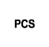 | Receives a PCS indicator light signal from the seat belt control ECU (CAN). |
| A/T P shift position indicator | Receives a P signal from the ECM (CAN). |
| A/T R shift position indicator | Receives an R signal from the ECM (CAN). |
| A/T N shift position indicator | Receives an N signal from the ECM (CAN). |
| A/T D shift position indicator | Receives a D signal from the ECM (CAN). |
| A/T S (1 to 5) shift position indicator*13 | Receives a (1 to 5) signal from the ECM (CAN). |
| A/T S (1 to 6) shift position indicator*14 | Receives a (1 to 6) signal from the ECM (CAN). |
| MULTI-INFORMATION DISPLAY (w/ Multi-information Display) |
Cruise information display:
The cruise information is displayed in the following order each time the DISP switch is pressed.
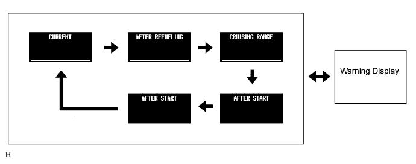
| Display | Outline |
| CURRENT | Receives vehicle speed pulse signals (via the direct line and CAN) and fuel consumption data, and measures the instant fuel consumption. |
| AFTER REFUELING | Receives vehicle speed pulse signals (via CAN) and fuel consumption data, and measures the average fuel consumption from the time the vehicle was refueled. |
| CRUISING RANGE |
|
| AFTER START (Average speed) | Receives vehicle speed pulse signals (via the direct line and CAN) and fuel consumption data, and measures the average vehicle speed from the time the engine was started. |
| AFTER START (Travel distance) | Receives vehicle speed pulse signals (via the direct line and CAN) and fuel consumption data, and measures the distance driven from the time the engine was started. |
Basic Flowchart.
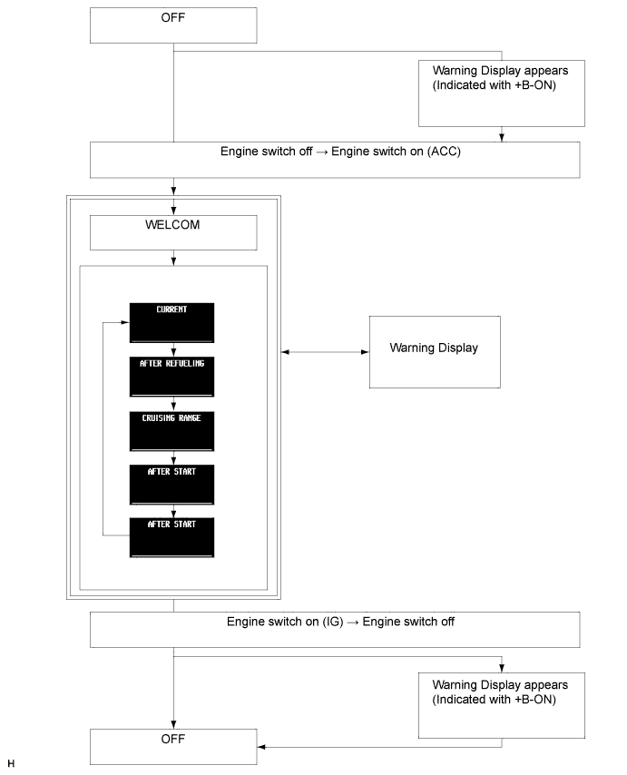
Multi-information Display:
When a warning is necessary, the warning display interrupts the multi-information display. The master warning light may illuminate or blink and buzzer may sound depending on the item in the multi-information display.
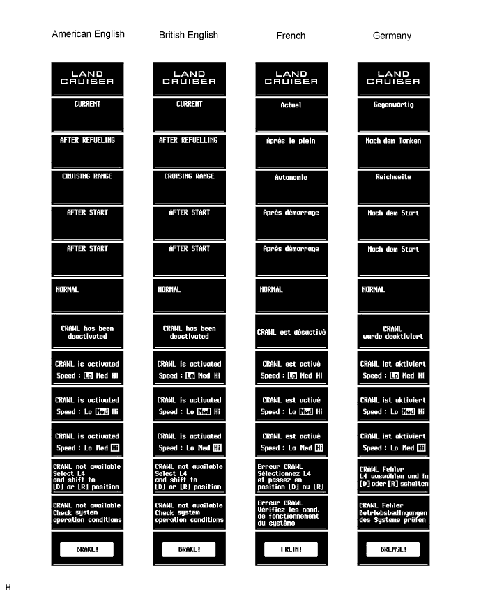
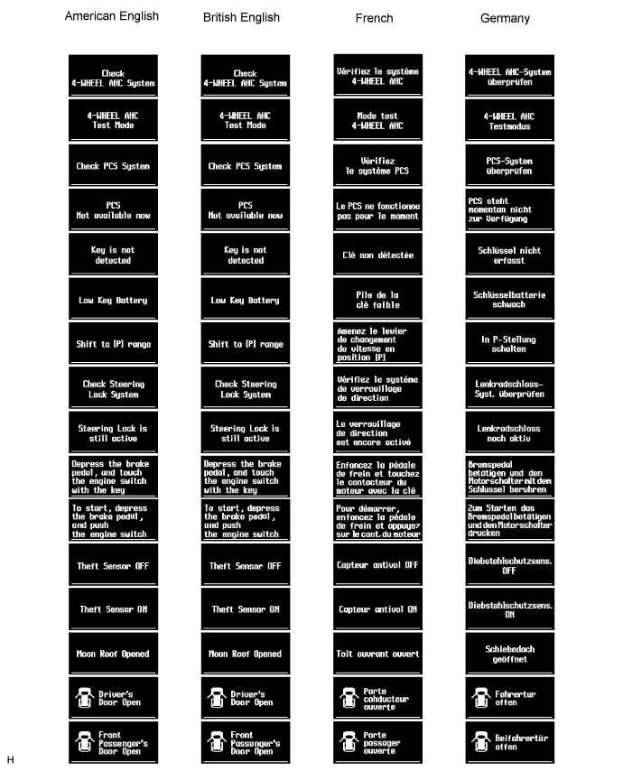
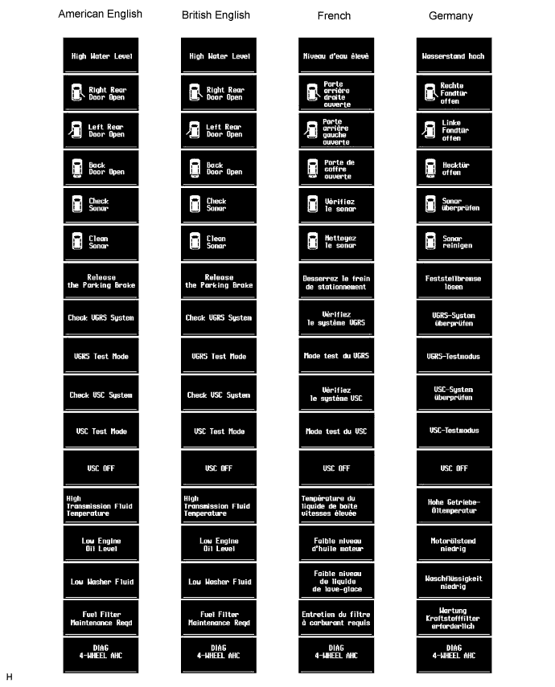
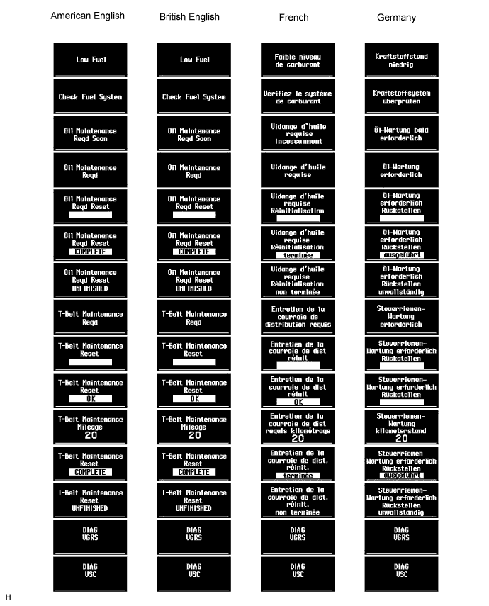
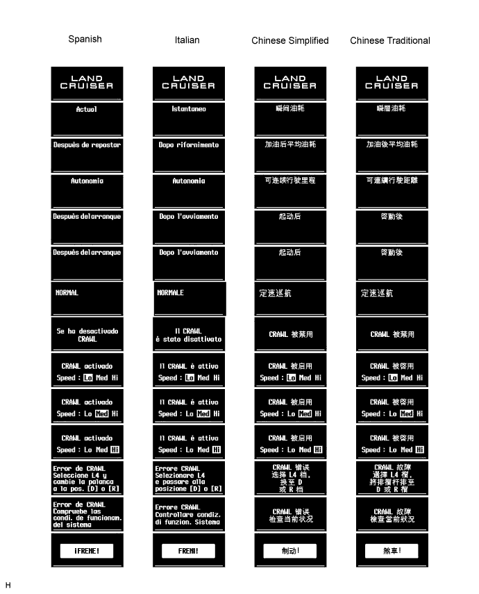
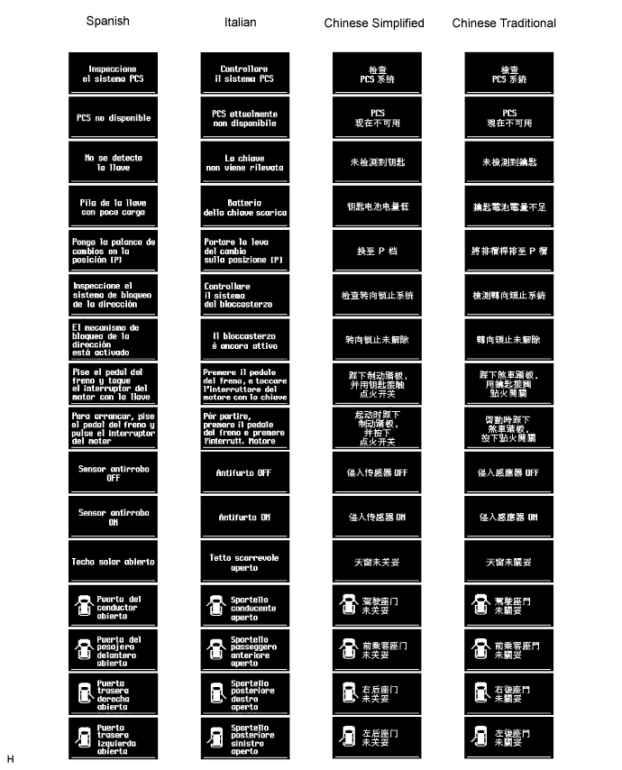
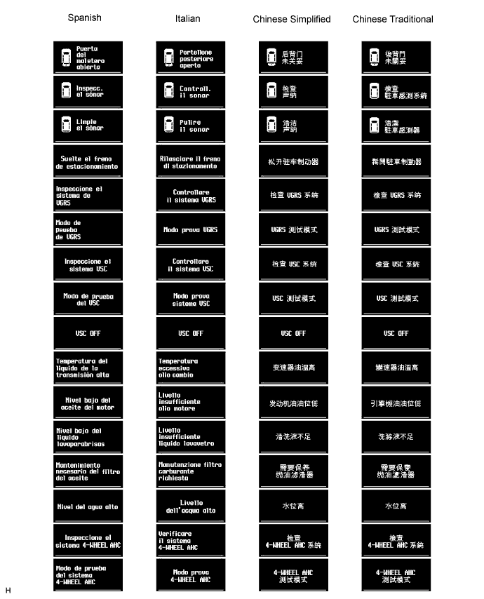
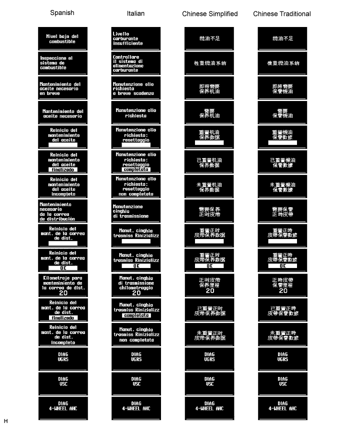